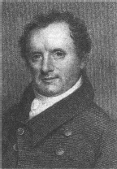

詹姆斯·芬尼莫爾·庫柏1789年9月15日出世佇北美洲的新澤西州。伊的家族搬去紐約州北部个庫柏斯鎮，佇遮經營一家農場。
庫柏有五個兄弟，七個姊妹。伊佇耶魯大學讀書。但是伊个成績弗好，佇1805年只好轉去當水手。伊佇美國海軍待到1810年。1811年，庫柏的阿爸過身。庫柏娶蘇珊·德·蘭西做老婆，in佇農場生活。咧1812年到1821年間，庫柏非常努力佇工作。但是伊非常貧窮。伊將偌濟錢濟予伊的兄弟姊妹。1820年，伊開始寫故事。庫柏所寫个冒險故事，儕是講述北美洲森林佮荒野个生活。
最後的莫希干人是庫柏最受歡迎个故事。偌濟人攏非常歡喜鷹眼个冒險經歷。庫柏變有錢，並到歐洲去旅行。
庫柏寫五个有關鷹眼个故事：拓荒者（1823）、最後的莫希干人（1826）、探路者（1840）佮鹿皮匠（1841）。伊閣寫間諜（1821）、領航員（1823）佮草原（1827）。詹姆斯·芬尼莫爾·庫柏佇1851年9月14日過身。